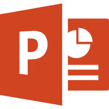
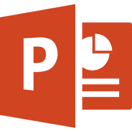
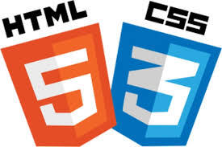
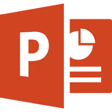
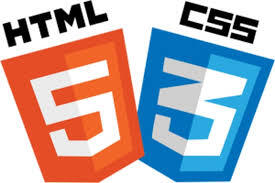
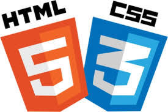
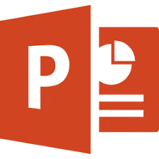
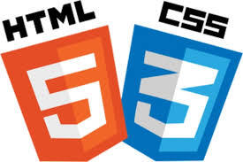

 





I am highly skilled in Microsoft Word, where I can efficiently create, edit, and format documents. I am familiar with advanced features such as mail merge, styles, headers, and footers, which allow me to produce professional-quality documents. I am also experienced in inserting tables, images, and other elements to enhance the content and presentation of my work
I have a solid understanding of Microsoft Excel, which includes managing spreadsheets, performing data entry, and using formulas to analyze data. I am capable of creating charts and tables to visually represent data and can organize information efficiently. These skills make me proficient in handling data-oriented tasks and basic analysis.
I excel in using Microsoft PowerPoint to design engaging and visually appealing presentations. I am proficient in creating slides that include animations, transitions, and multimedia elements such as videos and audio. My ability to organize content effectively ensures that my presentations are clear, impactful, and professional.
I am experienced in video editing using Adobe Premiere Pro. I can cut and edit video clips, add transitions, include effects, and synchronize audio to create high-quality video content. My knowledge of this tool enables me to produce professional-level videos for presentations, projects, or creative purposes.
I am skilled in using Canva to create graphic designs such as posters, flyers, presentations, and social media content. I can work with templates and customize layouts to create visually appealing designs that align with specific themes or goals. My creativity and attention to detail ensure that my designs stand out.
I am familiar with managing databases using CTT. I can input, organize, and retrieve data efficiently, ensuring that the database is well-maintained and easy to navigate. This skill allows me to handle data-related tasks systematically and accurately.
I have a basic understanding of HTML (HyperText Markup Language) and CSS (Cascading Style Sheets), which are essential for creating and designing websites. With HTML, I can structure webpages using tags to define elements like headings, paragraphs, images, and links. It helps me organize content in a clear and logical way. Using CSS, I can style and enhance the visual appearance of a webpage by adjusting colors, fonts, layouts, and other design elements. By combining HTML and CSS, I am able to create simple, functional, and visually appealing websites.